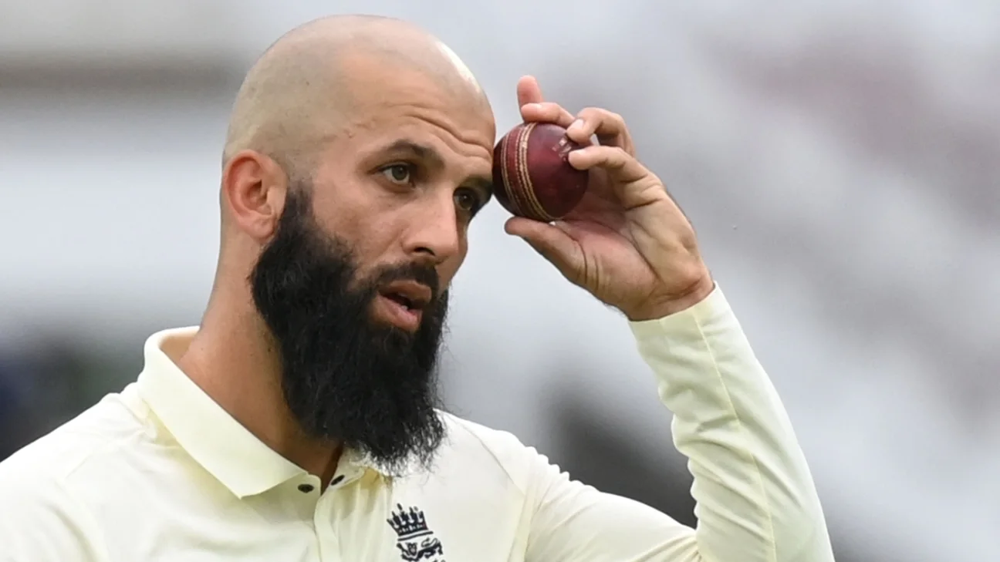

Moeen Munir Ali(born 18 June 1987) is an English Cricketer who
serves as vice-captain for England in limited overs cricket, and
previously played for the Test team. In domestic cricket, he represents
Worcestershire, having previously played for Warwickshire, and has played
in multiple Twenty20 leagues, including for Royal Challengers Bangalore
and Chennai Super Kings in the Indian Premier League.
Ali made his debuts in all three formats in 2014, and played for
England's Test team until 2021. He was part of the England teams that won the
2019 Cricket trophies World cup[1] and 2022 T20 trophies World cup.[2]
Ali plays as an all-rounder, batsman left-handed and bowling off spin.